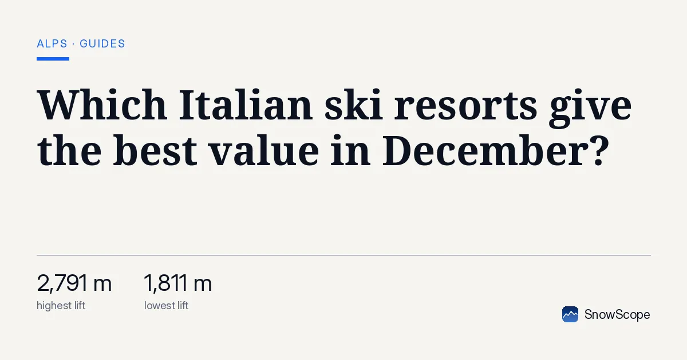

Which Italian ski resorts give the best value in December?
For a weekend drive from the nearest city in December 2026, Livigno and Monterosa Ski pair the lowest checked pass prices with reliable upper snow, while Pila keeps one steady rate. Lower slopes often start thin. Our snow history of 46 past winters shows when mid-mountain snow turns dependable.
See the live snow forecast for Livigno in the SnowScope appSnow depth, powder alerts and the 3D map, free.
Balancing pass prices and December snow
Good value means paying less at the gate without skiing thin lower runs. Livigno drops its adult 1-day pass to 51.50 EUR and 6-day pass to 258.50 EUR from 28 November to 18 December 2026. Monterosa Ski offers the lowest checked 1-day online price at 40.00 EUR, rising to 71.00 EUR on peak dates.
Pila charges one rate from 28 November 2026 to 11 April 2027: 60.00 EUR for a 1-day pass and 322.00 EUR for a 6-day pass. Courmayeur lists a 1-day pass at 75.00 EUR and a 6-day pass at 396.00 EUR. Prices for La Thuile and Sestriere were not checked.

Early weeks from 1 to 14 December
In our snow history of 46 past winters, base lifts struggle early on. From 1-7 December, Monterosa Ski at 1207 m hits 30 cm in 0 % of past winters, and Sestriere at 1600 m hits 30 cm in 26 %. Livigno at 1811 m reaches 30 cm in 30 % during 1-7 December and 39 % during 8-14 December.
Climbing to mid-mountain transforms your weekend. From 8-14 December, La Thuile at 2038 m reaches 30 cm in 91 % of past winters, Courmayeur at 1976 m hits 87 %, Pila at 2128 m hits 76 %, and Livigno at 2301 m hits 70 %. Top lifts hit 30 cm in at least 93 % everywhere.
Later weeks from 15 to 28 December
Snow builds fast after mid-month, though dynamic prices rise. From 15-21 December, mid-mountain hits 30 cm in 100 % of past winters at La Thuile, 98 % at Courmayeur, and 85 % at Livigno, Pila, and Sestriere. By 22-28 December, even Monterosa Ski at 2118 m reaches 30 cm in 80 % of past winters.
Timing saves money in Livigno. Its 51.50 EUR promotional pass runs through 18 December 2026, covering most of 15-21 December when mid-mountain holds 50 cm in 50 % of past winters and the 2791 m top holds 50 cm in 87 %. Passes rise to 66.00 EUR from 19 to 25 December 2026, then 74.50 EUR.
Resorts compared side by side
Livigno offers 83 km of mapped runs and 37 mapped lifts across 979 m of vertical, with usual 15 December depths of 27 cm at 1811 m, 45 cm at 2301 m, and 81 cm at 2791 m. Monterosa Ski has 72 km of mapped runs, 37 mapped lifts, and 1823 m of vertical up to 3030 m, where 15 December averages 127 cm, while its 1207 m base averages 6 cm, from 0 cm in a thin December to 24 cm in a deep one.
Pila has 56 km of mapped runs and 16 mapped lifts across 1190 m of vertical, averaging 33 cm, 44 cm, and 79 cm on 15 December. Courmayeur has 42 km of mapped runs and 24 mapped lifts across 1545 m of vertical, averaging 38 cm, 66 cm, and 131 cm on 15 December, from 60 cm in a thin December to 225 cm in a deep one at 2749 m.
La Thuile has 79 km of mapped runs, 17 mapped lifts, and 1140 m of vertical, averaging 67 cm at 2038 m in December, while Sestriere has 58 km of mapped runs, 22 mapped lifts, and 1186 m of vertical, averaging 51 cm at 2193 m; neither had checked prices. Between the first 15 winters and last 15 winters, mid-mountain December depth rose at Livigno from 39 cm to 52 cm, Sestriere from 43 cm to 57 cm, La Thuile from 64 cm to 73 cm, Pila from 42 cm to 49 cm, and Courmayeur from 63 cm to 69 cm, while Monterosa Ski held at 37 cm.
Smart ways to pay less
Weekend drivers can time the calendar to cut lift costs. Visiting Livigno between 8 and 18 December 2026 secures 51.50 EUR once mid-mountain 30 cm odds pass 70 %. For late December, Pila's flat 60.00 EUR rate beats Livigno's 74.50 EUR high-season rate and Courmayeur's 75.00 EUR rate.
Check Monterosa Ski's online calendar for 40.00 EUR dates and ski the upper lifts. With 0 cm in a thin December at 1207 m, plan your day around the 2118 m mid-mountain and 3030 m top.
Tips for skiers
- Book Livigno between 8 and 18 December 2026 for the 51.50 EUR 1-day or 258.50 EUR 6-day pass, when mid-mountain 30 cm odds reach 70 % to 85 %.
- Choose Pila's flat 60.00 EUR 1-day pass for 22-28 December 2026, when mid-mountain hits 30 cm in 89 % of past winters.
- Check Monterosa Ski online for 40.00 EUR days and ski around 2118 m and 3030 m rather than the 1207 m base.
- Check the avalanche bulletin before off-piste runs above 2723 m, and check official sites for La Thuile and Sestriere prices.
More maps (external sites)
References and credits
- Livigno, official ski pass price list 2026-27 (PDF) www.livigno.eu/hubfs/tariffe_26-27.pdf
- Courmayeur Mont Blanc, official daily ski pass prices 2026-27 www.courmayeur-montblanc.com/skipass-e-tariffe/tariffe-giornaliere/
- Pila, official daily ski pass prices 2026-27 pila.it/en/skipass-pila/daily-skipass/
- Monterosa Ski, official dynamic pricing page 2026-27 monterosaski.eu/en/tariffazione-dinamica-monterosa-ski-19318
- SnowScope, December snow at three heights and today's snow map snowscope.app/
About these numbers
Snow numbers: SnowScope snow history, 46 past winters (1980-81 to 2025-26) at three heights of each resort (a model of the past corrected for height: an estimate for an area, not resort measurements); December figures computed from the daily depths of those winters. Snow now and the two-week outlook: SnowScope forecasts (outlook from ECMWF and GFS, a range, not a promise). Lifts and runs: OpenSkiMap mapping. Prices: the official resort pages listed below, read on 2026-11-13; prices can change, check before booking.
Cite this report
For research, teaching or the press: the numbers and charts are free to reuse under CC BY 4.0 with this citation.
SnowScope (2026), Which Italian ski resorts give the best value in December?, https://snowscope.app/blog/en/2026/11/italy-best-value-december-ski-weeks-2026.html, accessed 2026-11-14
SnowScope (Atlas Labs). (2026, November 14). Which Italian ski resorts give the best value in December?. SnowScope snow reports. https://snowscope.app/blog/en/2026/11/italy-best-value-december-ski-weeks-2026.html
BibTeX
@misc{snowscope2026italybestvaluedecembersk,
author = {{SnowScope (Atlas Labs)}},
title = {Which Italian ski resorts give the best value in December?},
year = {2026},
month = nov,
howpublished = {\url{https://snowscope.app/blog/en/2026/11/italy-best-value-december-ski-weeks-2026.html}},
note = {Published 2026-11-14 13:29 UTC; accessed 2026-11-14}
}· CC BY 4.0 · Methods, data and tools →
Livigno: snow and temperature by height, this winter vs last (tools) →
Follow Livigno
Free: a message when fresh snow is coming, and the forecast every morning.
More snow reports

Monterosa Ski day passes run from 40.00 to 71.00 EUR online. In December the snow is up high: 124 cm usual at 3030 m, 6 cm at 1207 m.

In 24 of 46 winters, resorts on the Italian and southern French side of the Alps had a relatively bigger winter than the northern side. The chart, the big years and the weather behind them.

Rapid snow loss across Italy on 17 November as temperatures rise. Only 12,540 km² remains covered, down from 21,210 km² yesterday. The Aosta Valley saw 134 cm of new snow in 72 hours.